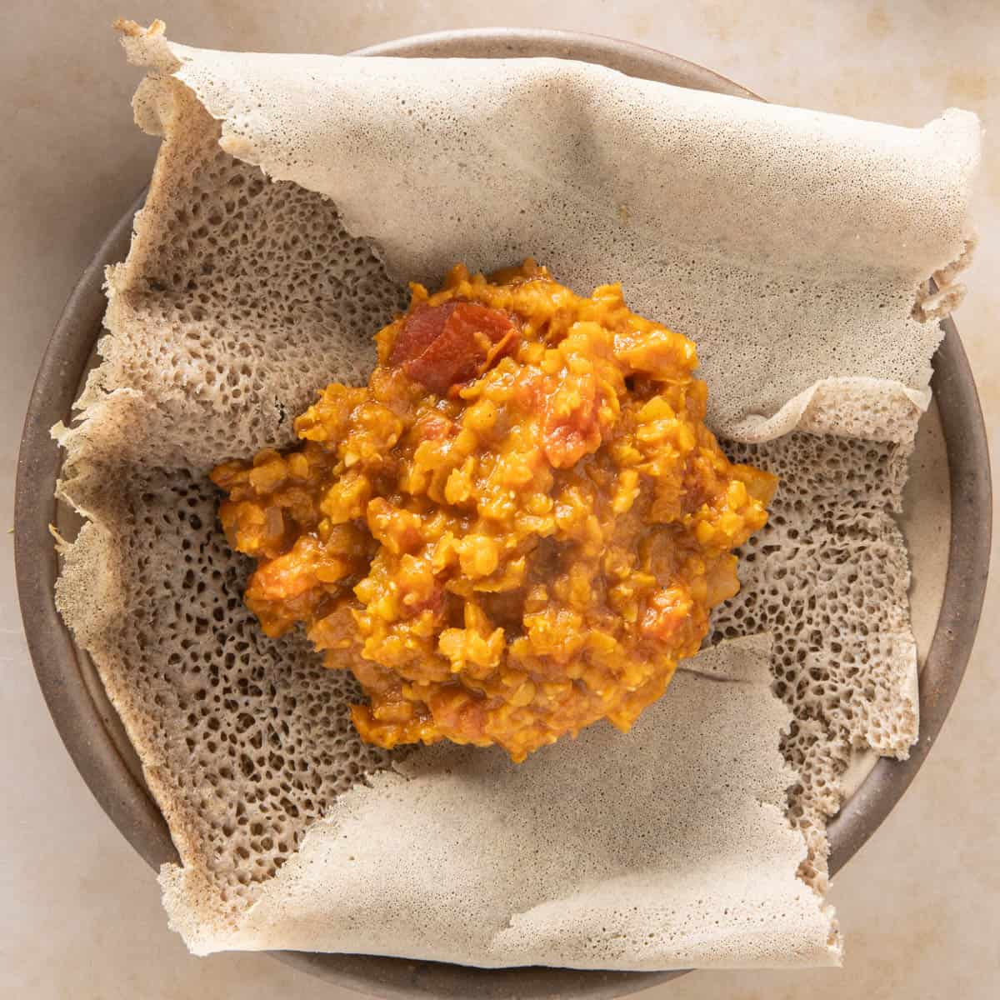

How to Make Misir Wot

Let's make your new favorite red lentil dish!
Ingredients
- 3 tablespoons unsalted butter or ghee
- 1 cup onion, chopped fine
- 1 tablespoon minced garlic
- 1 tablespoon minced ginger
- 1 tablespoon tomato paste
- 1 teaspoon salt
- 1.5-2 tablespoons berbere seasoning
- 1 cup red lentils, rinsed 2-3 times
- 2.5 cups water
- lime juice, for garnish
Steps
- Heat a heavy bottom sauce pot or dutch oven. Add butter or ghee, along with chopped onion and sauté for 2-3 minutes, until onions soften.
- Add minced garlic and ginger and sauté another minute.
- Add tomato paste, salt and Berbere seasoning / spice mix. Stir well. Add rinsed and drained lentils, 3 cups water and stir.
- Bring it to a boil, then reduce heat to medium, cover the pot and cook for 12-15 minutes, or until the lentils cook through and reach a creamy consistency. Be sure to stir every few minutes or so. If the stew seems too thick, add ½ - 1 cup water (or as needed) and stir well till the water gets absorbed and lentils reach a creamy consistency. Check for seasoning.
- Finish the dish with a light squeeze of lime juice. Serve with the traditional sourdough flatbread, injera. Enjoy!
This recipe was originally written by Aneesha Gupta and can be found at Spice Cravings. Please check out her website and other recipes and leave her a good review if you love this misir wot recipe as much as I do!